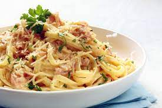

Massa à Carbonara

Descrição
As vezes sobram claras, outras vezes sobram gemas! Evite o desperdício alimentar com um clássico da cozinha italiana, esparguete à carbonara. A combinação da massa, do bacon, com as gemas de ovo e o queijo parmesão
fazem desta receita um prato muito guloso.
Ingredientes
- 350 g de massa (esparguete)
- 100 g de queijo parmesão + extra para servir
- 200 g de bacon em pedaços
- 1 ovo + 2 gemas
- 2 alhos esmagados
- sal e pimenta preta q.b.
- azeite q.b.
Confeção
- Bate o ovo e as gemas e tempera com um pouco de pimenta acabada de moer. Acrescenta o queijo parmesão, mistura e reserva.
- Leva ao lume um tacho com água e sal e coze a massa até ficar no ponto al dente de acordo com as instruções da embalagem.
- Coloca um pouco de azeite numa frigideira larga e frita o bacon e os alhos esmagados em lume médio até ficar dourado, cerca de 5 minutos. Retira os alhos da frigideira.
- Escorre a massa (mas reserva um pouco da água da cozedura) e coloca-o na frigideira com o bacon para que absorva o sabor e mistura bem. Adiciona um pouco da água da cozedura, cerca de 7 colheres de sopa e envolve.
- Retira a massa e o bacon do lume e coloca rapidamente a mistura das gemas e do queijo. Vai levantando a massa com a ajuda de um garfo ou pinça até que fique totalmente coberto com a mistura. Tempera com sal se desejares.
- Serve imediatamente com um pouco mais de queijo parmesão ralado e pimenta preta.
Voltar ao topo
Voltar há Pagina Inicial